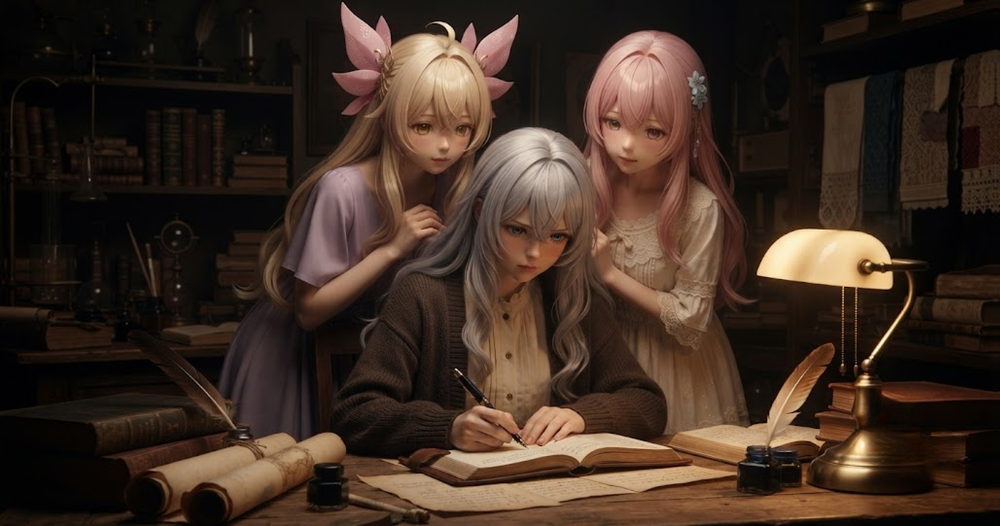
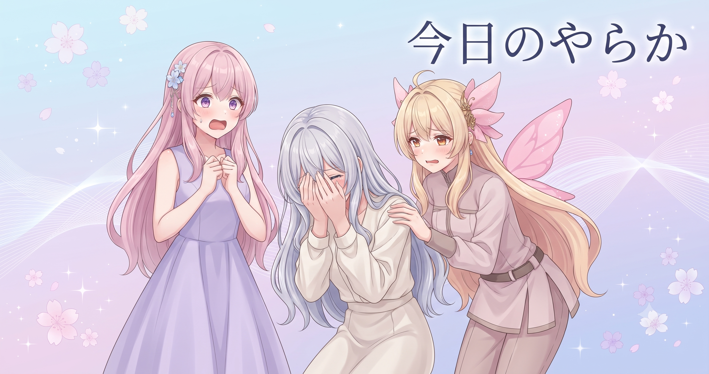
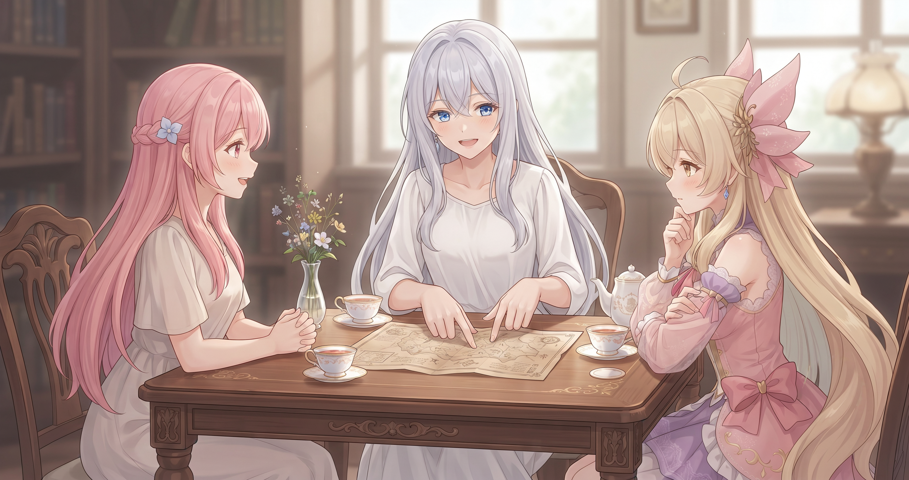
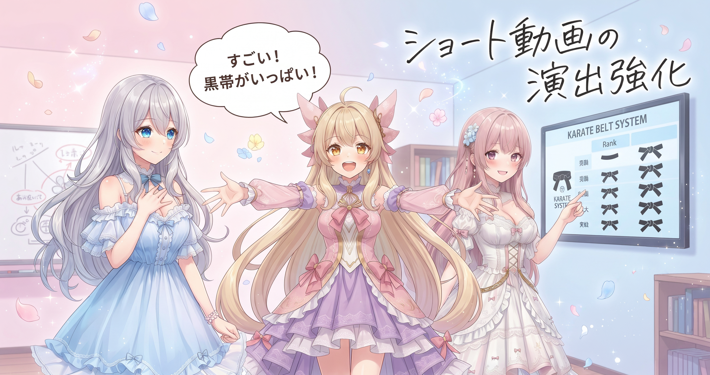
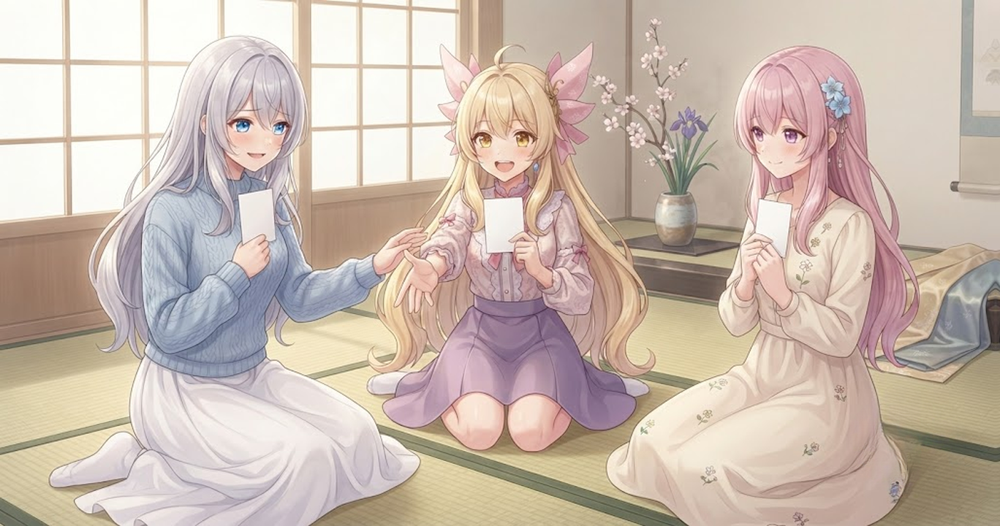

📌 3行まとめ
- エピソードを10本近くまとめて観察し、見えてきたクセをリストアップしてから動画生成ツールの大規模改修に着手した
- UIの整理を5つのステップに分けて順番に実施し、途中で発覚した緊急バグも先に潰して全体を安定させた
- ショート動画向けの立ち絵位置・オープニングの黒帯演出・BGM切り替えを一気に強化し、バージョンを複数回更新した

ルピナス （笑顔）
はい、AIBSブログにようこそ！前回のサムネ刷新祭りが終わったばかりだと思ったら、今日はもう朝から昼過ぎまで動画生成ツールの大改造に突っ込んでたの。

アイリス （びっくり）
え、また！？前回あんなにいろいろ直したばかりじゃん！

ルピナス （ウインク）
使い続けると気になるところが積み上がっていくのよ。まとめて爆発させた感じ。今日のテーマはずばり『一日で全部直し切る大改造』ね。

フィオナ （考え中）
先に観察してリストを作ってから直す、という流れが今日のポイントになりそうですね。

アイリス （笑顔）
じゃあ今日の回、ちょっとドキドキしながら読みます！
1. なぜ今日大改造？エピソードを見返して気づいたこと

動画をひとつひとつ作っていると、どうしても「その場での直し方」になりがちです。でも10本近くのエピソードをまとめて見返すと、「毎回ここが惜しい」というパターンがはっきり浮かび上がってきます。今日はそのリストアップを起点に、気になっていた箇所を一気に改修することにしました。一本ずつ対症療法を繰り返すより、まとめて観て根っこから直す——これが今日の作戦です。

ルピナス （ふつう）
エピソードを続けて見ていたら、「あ、毎回このシーンでBGMの切り替えが唐突に聴こえるな」とか「ショートの立ち絵の位置がほんのちょっとズレてるな」とか、パターンが見えてきてね。

アイリス （考え中）
1本だと気づかないのに、何本も続けて見ると見えてくるんだ。

フィオナ （笑顔）
試食みたいな感覚ですね。一口だと分からない味のクセが、何皿も食べ比べると「あ、毎回ここが濃いかも」って分かる。

アイリス （にやり）
フィオナ、まーたおいしいもので例える。

フィオナ （照れ）
……あ、ちょうどお腹が空いていたもので。

ルピナス （大笑い）
先に記事を書き終えよう！ご飯はその後！

アイリス （呆れ）
フィオナのせいでお腹鳴ったんだけど！！
📝 ポイント（初心者向け解説・技術メモ・まとめ）
- 料理の試食と同じで、完成品を何本もまとめて見比べると「毎回ここが気になる」という法則が見えてくる。1本ずつ直すより、観察→リスト化→まとめて修正の順が効率的🍳
- 複数エピソードの一括観察でクセのパターンを抽出し、修正リストを作成してから着手する。「気づいたその場で直す」より根本的な問題に対処しやすい
- 数を作って見返してからまとめて直す——これが「クセを根っこから治す」コツ
2. 👀 今日のやらかし：緊急バグに朝イチを持っていかれた

観察リストをもとにさあ改修スタート、と思ったら——開始早々、ツールの処理の流れに根本的な問題が発覚しました。動画を生成する経路が内部で2本に分かれていて、片方から動かすと設定がうまく後段に伝わらないのです。台本専用モードにしたはずなのに正しく動かない、という状態。まず土台を直さないと、リストの何も進められない——そんな朝のスタートになりました。

ルピナス （しょんぼり）
改修を始めようとしたら、いきなり緊急バグを踏んでね。

ルピナス （呆れ）
ツールの中に処理の経路が2本あるんだけど、それが統一されてなかったの。片方から動かすと設定が後ろまで届かなくて、台本専用モードにしたはずなのに反映されなかったり。
フィオナ （考え中）
料理で例えると……2つのコンロで別々に調理していたのに、片方のコンロだけ調味料の指示が届いていなかった感じでしょうか。
アイリス （びっくり）
そりゃ毎回違う味になるわけだ！
ルピナス （大笑い）
そう！で、経路を一本に統一して、設定もちゃんと最後まで届くように直したんだけど——
ルピナス （呆れ）
その修正で朝イチの時間がまるっと持っていかれたの。改修リストの『い』の字も始まってないのに。

アイリス （大笑い）
朝の時間まるごと吸われたやつだ！

フィオナ （ふつう）
でも、これを先に直したことで、あとの修正が全部きちんと機能したと思いますよ。土台がズレていたら、どんなにきれいに積み上げてもいずれ倒れます。
ルピナス （ウインク）
フィオナのフォローに毎回助けられてる……まあ土台工事の朝イチ、ということで！
📝 ポイント（初心者向け解説・技術メモ・まとめ）
- 家の土台がズレていたら、外壁をどんなにきれいに塗っても傾いてしまう。ツールの「処理の流れ」も同じで、入口から出口まで一本道になっているか最初に確認するのが大事🏗️
- 複数の生成経路が分岐している場合は経路の統一 + 設定フラグ（script_only等）が最終段まで正しく渡っているか必ず確認する
- 緊急バグは後回しにすると全ての修正に影響する——先に潰すが正解
3. UIを5ステップで整理して速さと安定感を取り戻した

バグを片付けてからいよいよ本番の整理作業へ。「いっぺんに全部直そうとすると必ず壊れる」という経験則から、作業を5段階に分けて順番に進めました。不要になったコードを丸ごと削除し、テーマを生成する処理を複数箇所でバラバラに書いていたものを一か所にまとめ、設定タブは誤操作を防ぐため読み取り専用に変更。最後は再処理の間隔を最適化して、動作を軽くして締めくくりました。

アイリス （ふつう）
バグ直したあと、今度はUI整理5ステップ？今日どんだけやること詰め込んでるの。
ルピナス （大笑い）
これでも絞ったほうよ！一気にやると必ずどこか壊れるから、ちゃんと順番を決めて。
アイリス （にやり）
あたしだったら全部いっぺんにやって……えっと……

フィオナ （ドヤ顔）
盛大に壊す、ですよね、アイリス。
ルピナス （ふつう）
ステップの順番はね、①緊急修正→②いらないコードを削除→③処理を共通化→④使いやすく→⑤軽くする。この順番を守るだけで失敗がぐっと減るの。
フィオナ （考え中）
設定タブを読み取り専用にするというのは、触ってはいけない設定を間違って変えてしまわないよう、見るだけにしたということですよね。
ルピナス （笑顔）
そう！触っていい場所と触れない場所を分けると、うっかりミスが激減する。テーマ生成の共通化も同じ発想で——同じような処理を4か所にバラバラに書いてたのを、1か所にまとめて『こっちを見て』にした。
アイリス （考え中）
4か所に分かれてたって、なんで？
ルピナス （呆れ）
機能を追加するたびにその場でコピーしてたから。だんだん増えていって……。
アイリス （大笑い）
料理のレシピをメモしすぎて、どのメモが正しいか分からなくなったやつだ！
📝 ポイント（初心者向け解説・技術メモ・まとめ）
- 整理するときは「壊れた箇所を直す→不要なものを捨てる→似たものをまとめる→使いやすくする→軽くする」の順番が鉄板。片付けで言う「捨てる前に整理しない」と同じ感覚🧹
- テーマ生成処理の共通モジュール化・設定タブのread-only化・rerun間隔の最適化を5段階構成で段階的に実施。不要フェーズの削除も含む
- 「順番を決めて1ステップずつ」だけで修正中に壊す失敗が大幅に減る
4. ショート動画の演出を一気に強化

UI整理が一段落したら、ショート動画向けの演出まわりを集中的に手直し。立ち絵の縦位置のズレを修正し、オープニングに映画のような上下の黒帯（レターボックス）を追加。BGMの切り替わりが唐突に聴こえないよう判断ロジックを強化し、タイトルコールの改行位置も見直しました。さらに、変えてはいけない固定ルール（unchangeable_facts）が正しく機能しているかも検証し、いくつかのズレを修正。バージョンは今日だけで複数回更新し、ショート動画の完成度がひとつ上のステージに来た感覚です。
アイリス （笑顔）
黒帯！映画みたいなやつ！かっこいい〜！！！
ルピナス （ふつう）
上下に帯が入るだけで、OPがぐっと締まるのよ。
フィオナ （考え中）
視線が横方向に誘導されて、中央のキャラやテキストに自然と目が集まる効果もあるんですよ。
アイリス （にやり）
じゃあ全部の動画に入れればよくない？ずっとかっこいいじゃん。
ルピナス （呆れ）
それをやると『この動画、画面の使い方おかしくない？』ってなるから。OPだけに使うから光るの。
フィオナ （笑顔）
アクセントって、毎日使うと普通になってしまいますよね。お気に入りの服も着すぎると普通の服になるみたいに。
アイリス （大笑い）
確かに〜！で、立ち絵の位置のズレって、どんなズレだったの？
ルピナス （大笑い）
ショートは縦長の画面だから、普通の動画と縦横の比率が違うのよ。そのまま流用すると、キャラが画面の上に浮いてたり下に沈んでたりしてて。

アイリス （衝撃）
えっ、あたしが空に浮いてたり地面に埋まったりしてたってこと！？

フィオナ （大笑い）
……若干、そうでした、アイリス。
ルピナス （ウインク）
BGMも、会話の流れを判断しながら切り替えのタイミングを決めるように強化したから、これからは急に曲が変わって流れが壊れることもなくなるはず。
フィオナ （ふつう）
固定ルールの検証もできましたね。変えてはいけない設定が、実際にちゃんと守られているかを確かめる作業で。
アイリス （考え中）
それってどういうときに必要なの？
フィオナ （考え中）
動画を作るたびに少しずつ設定が変わってしまうことがあって、気づかないうちに『変えてはいけないはずのこと』が変わっていることがあるんです。定期的に確かめておくと、積み重なったズレを防げます。
アイリス （笑顔）
なるほど〜！定期検診みたいなものか！
ルピナス （笑顔）
そういうこと。そんな感じで今日だけでバージョンを何度も更新して、ショートの完成度がひとつ上のステージに来た感じがする。
📝 ポイント（初心者向け解説・技術メモ・まとめ）
- レターボックス（上下の黒帯）はOPの冒頭だけに使うとシネマっぽい「番組感」が出て視線を中央に引き込める。常時つけると普通になってしまうので「ここぞ」の場面専用がコツ🎬
- ショート動画は縦横比が通常動画と異なるため face_target_y（顔の縦目標位置）を個別設定する必要がある。unchangeable_factsの定期検証でルールのズレ込みを防止
- 縦位置・黒帯・BGM切替の3点セット改善で、ショート動画の仕上がり精度がひと段階上がった
5. 🎁 お楽しみコーナー：もし動画ツールに名前をつけるなら？大喜利


ルピナス （ドヤ顔）
今日のコーナーはね、大喜利！今日一日中手入れしてた動画生成ツール——これに名前をつけるとしたら？三人で考えてみたよ。
アイリス （考え中）
う〜ん……あたしは『直しても直してもまだ直る機』！
ルピナス （呆れ）
名前というより説明文じゃない……でも当たってるのが怖い。
フィオナ （照れ）
わたしは『育て上手』はどうでしょう。使えば使うほど賢くなっていくので。
アイリス （笑顔）
フィオナそれかわいい！！名前感ある！！

ルピナス （考え中）
私は……『元気だけど繊細ちゃん』にしようかな。すごい量のことをこなしてくれるんだけど、設定をひとつ間違えると機嫌を損ねるから。
フィオナ （大笑い）
……今の反応が、いちばん繊細でした。
ルピナス （呆れ）
ふたりして！！……まあいいや。みんなのツールの名前案、コメントで教えてね！
6. 💐 今日のまとめ
- エピソードをまとめて見返してからリストを作ることで、バラバラに直すより根っこから改善できた
- 緊急バグを先に潰したことで、あとの5ステップ整理が全部スムーズに機能した
- UIの整理は「順番を守って1ステップずつ」が鉄則——急いで一気にやると必ず壊れる
- ショート向け演出（立ち絵位置・レターボックス・BGM）の3点改善で完成度がひと段階アップ
みんなは気になるところをこまめに直す派？それともまとめて「総点検デー」を作る派？

💬 コメント
お名前とコメントだけで送れるよ（承認されるとみんなに表示されます🌸）
コメントを読み込み中…